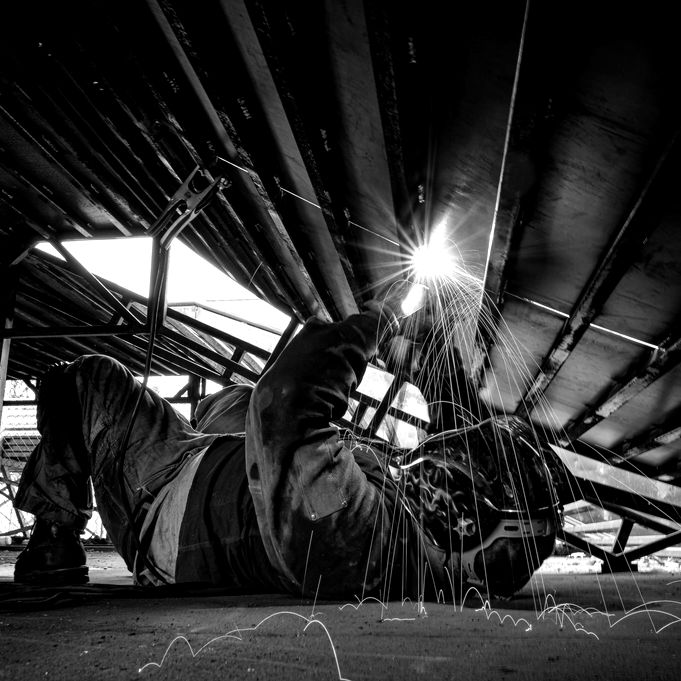
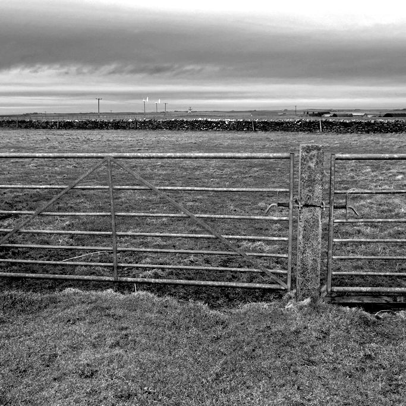
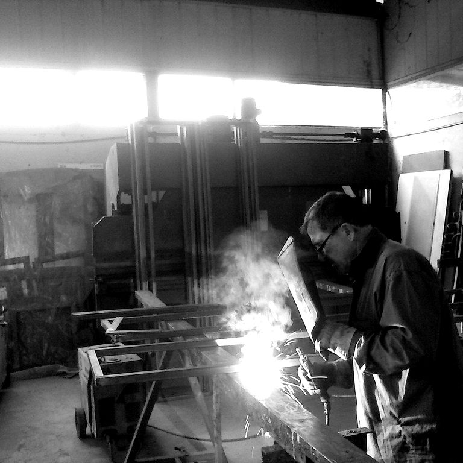
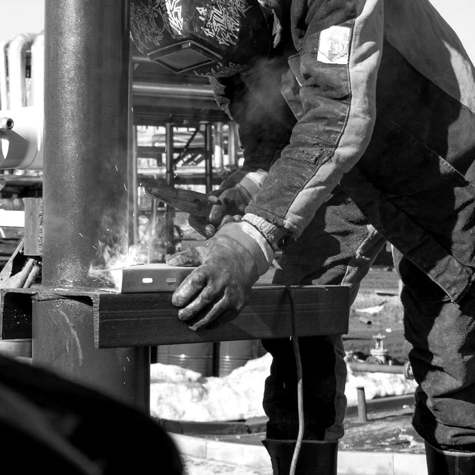

On site01
Mobile welding
MIG, stick and TIG from the ute. No need to unbolt it and bring it in.
- Machinery and attachments
- Broken brackets and mounts
- Site steel for builders
Mobile welder and fabricator · New Plymouth and Taranaki
Craig runs Ironbark from a fully kitted ute and a workshop in Bell Block. Broken gate, cracked trailer drawbar or a new balustrade for the deck: he welds it on site or builds it in the shop.

Six kinds of job, in three colours: blue on site, red on the farm, yellow built in the workshop.
MIG, stick and TIG from the ute. No need to unbolt it and bring it in.
Drawbars, crossmembers, rusted floors and new side rails, done so it passes its WOF.
Gates hung, rehung and rebuilt. Yards, crushes, feeders and anything else the cows have bent.
Brackets, frames, beams and posts built to a drawing or a sketch on a napkin.
Deck, stair and balcony balustrades in steel or stainless, built to code height and fitted.
TIG-welded stainless for dairy sheds, boats and kitchens, cleaned and passivated.
Most repairs are done in one visit. Builds go through the workshop and are fitted on a set day.
Send Craig a photo of what's broken, or a sketch of what you want built. He'll tell you straight if it's a site job or a workshop job.
Repairs are usually done this week, on your farm, section or site. Bring the power if you have it; the ute has its own if you don't.
Gates, frames and balustrades are measured, built and finished in Bell Block, then fitted on a day that suits you.
You get the invoice once it's in and working. No call-out surprises; you'll know the rate before he comes.



Sample reviews written for this style demo.
out of 5, from 27 Google reviews
“Snapped the drawbar on the stock trailer two days before the sale. Craig came out to the farm that afternoon, plated it properly and it's been fine since.”
HamishInglewoodTrailer repair
“He built and fitted the stainless balustrade on our deck. Measured twice, turned up when he said, and the welds are so clean you can't find them.”
LeanneFitzroyBalustrade
“Rehung six gates and rebuilt the loading race in a day. Fair rate, no fuss, and he left the offcuts in the skip not the paddock.”
WiremuŌkatoFarm gates
Workshop in Bell Block. Anywhere around the mountain within about 60 km; South Taranaki by arrangement.
| Town | From Bell Block |
|---|---|
| New Plymouth | 0–12 km |
| Waitara | 10 km |
| Inglewood | 20 km |
| Ōakura | 25 km |
| Ōkato | 38 km |
| Stratford | 40 km |
Farm work right round the mountain. Ask about Hāwera and Ōpunake: Craig is down that way most weeks.
Call or text with a photo. For builds, send a sketch and rough sizes and he'll come and measure.